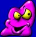

Welcome to the archived version of www.originaljojos.com
Pages were restored thanks to the Internet Wayback machine, and I took care to merge
every versions of the site to have as much images and pages as possible.
Jojo's, Bouncin' Boneheads and related trademarks are belonging to their respective owners which does not sponsor, authorize or endorse this site.
Press the button to continue to the real website. Welcome in 2000.